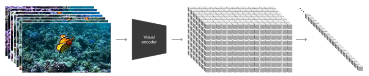

这里看的是OpenAI写的Sora技术报告
Sora是一个Video Generation生成器，可以生成一分钟左右的高质量视频。
是使用不同长度的videos和images训练的text-conditional diffusion models。
是在video和image latent code的时空patches上的运行的transformer结构。
这份技术报告只包含了两部分内容, 对于模型和实现细节在这份报告中并没有包含。
(1) 将所有类型的视觉数据转化为统一的表示形式，从而实现生成模型的大规模训练
(2) 对 Sora 的能力和局限性进行定性评估。
Sora可以生成不同时长、宽高比和分辨率的视频和图像，最多可达一分钟的高清视频。
Turning visual data into patches
- LLM成功的一部分原因来自于token的使用，可以优雅地将不同模态的text进行统一的编码，本文考虑的是在视觉数据中如何从中获益。Sora的patches类似于tokens, patches对于在不同形式的videos和images上训练生成模型是高效并拓展性高的。
- 总结下来，首先将视频压缩到较低维的latent space，然后将这个表征分解为时空（spacetime）patches。

Video compression network
- 训练一个网络[Auto-encoding variational bayes.]来降低视觉数据的维度。该网络将原始视频作为输入，并输出压缩了时间和空间的latent representation。Sora在这个压缩的latent space中训练并随后生成视频。我们还训练了一个相应的decoder模型，该模型将生成的latents映射回pixel space。
Spacetime latent patches
- 给定一个压缩的输入视频，我们提取一系列spacetime patches作为transformer tokens。这个方案也适用于图像，因为图像只是单帧的视频。我们基于patch的表示使Sora能够在不同分辨率、持续时间和宽高比的视频和图像上进行训练。在推理时，我们可以通过在适当大小的网格中安排随机初始化的patches来控制生成视频的大小。
Scaling transformers for video generation
- Sora是一个diffusion model[Scalable diffusion models with transformers]，通过noisy patches预测原始的clean patches。Sora是一个diffusion transformer, 因为transformer的scaling特性。
- Sample quality improves markedly as training compute increases.
Variable durations, resolutions, aspect ratios
- 采样的灵活性 Sampling flexibility
- 提升构图和框架 Improved framing and composition，不会生成主体的部分出现在图像之外。
Language understanding
- 使用了DALL·E3中的re-captioning技术。我们首先训练一个高度描述性的captioner model，然后使用它为训练集中的所有视频生成文本描述。作者发现，对高质量描述性的视频字幕进行训练可以提高文本保真度以及视频的整体质量。
- 与 DALL·E3 类似，我们还利用GPT将简短的用户提示转换为较长的详细captions，然后送到视频模型中，这使得Sora能够生成准确遵循用户提示的高质量视频。
Prompting with images and videos
- Sora还可以使用图像和视频作为prompts
- Sora可以向前向后拓展视频
- 结合SDEdit，可以变换videos的风格和环境
- 还可以在两段不同的视频中做插入（这个估计就是对latect space做插值操作了？）
Image generation capabilities
Emerging simulation capabilities
大规模训练后获得的突发能力，没有任何归纳偏置的情况下，完全来自于scale
- 3D consistency. Sora can generate videos with dynamic camera motion.
- Long-range coherence and object permanence.
- Interacting with the world.
- Simulating digital worlds.
limitations
- For example, it does not accurately model the physics of many basic interactions.